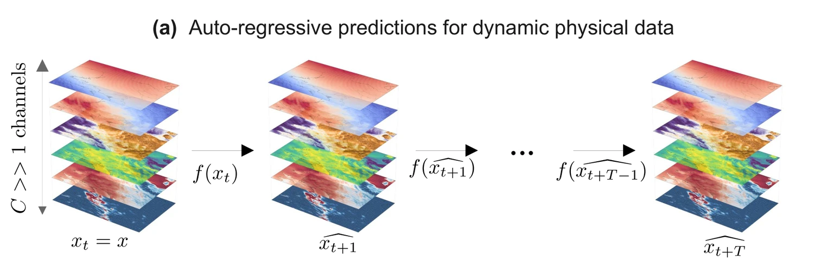
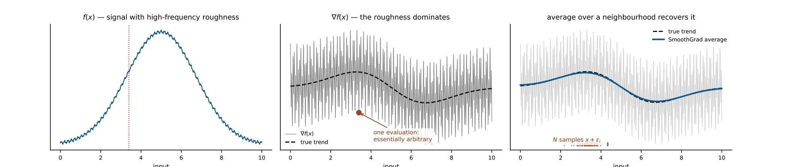
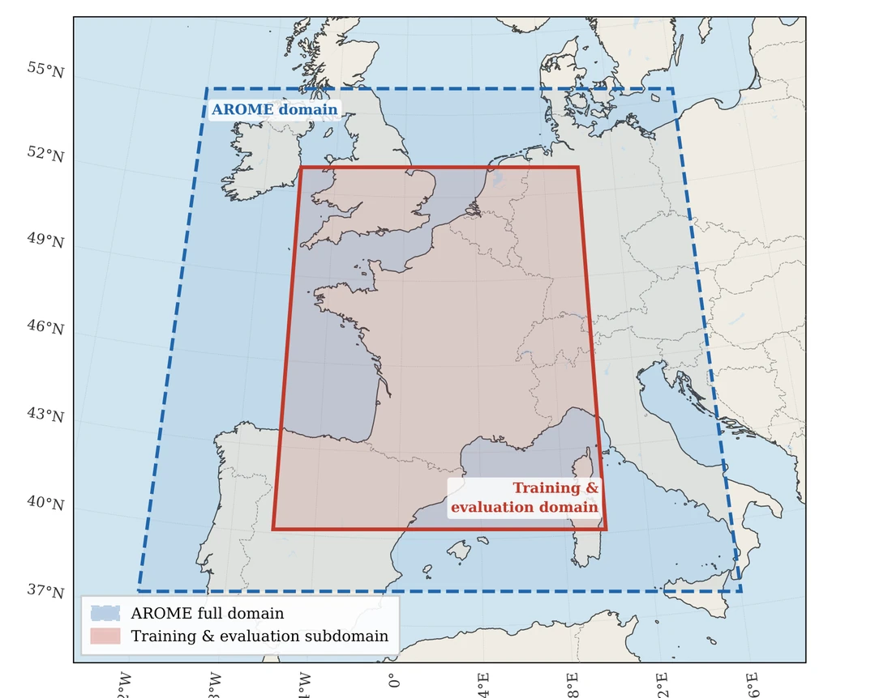
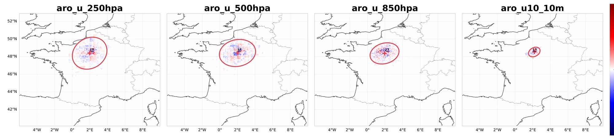
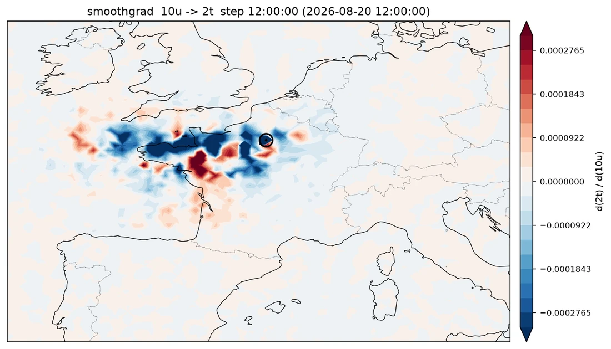
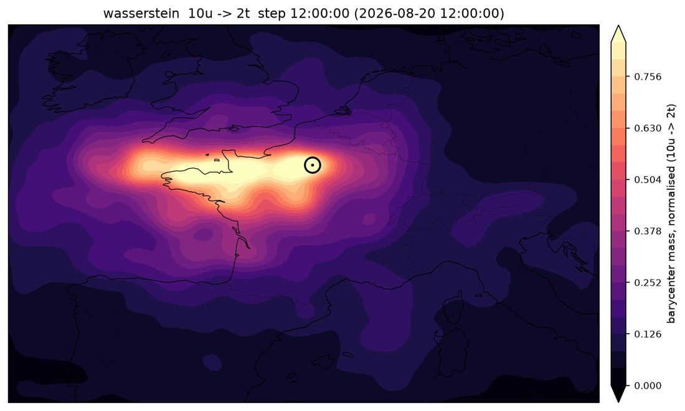

Preprint · Under review · arXiv:2604.22580
Explanation of Dynamic Physical Field Predictions using WassersteinGrad
Application to autoregressive weather forecasting.
- 1Univ. Toulouse, INSA Toulouse, CNRS UMR 5219, IMT, Toulouse, France
- 2Météo-France, CNRS, Univ. Toulouse, CNRM, Toulouse, France
- 3Cerfacs, CNRS/Cerfacs/IRD, CECI, Toulouse, France


Perturbing the input of a weather model doesn't make its explanation noisier — it makes it move. So we stop averaging explanations pointwise and start averaging them geometrically.
01 — The problem
Neural forecasts are replacing physical solvers. Nobody can read them.
Data-driven models now match or beat numerical weather prediction at a fraction of the inference cost. But when one predicts heavy rain over Paris tomorrow, a forecaster has no way to ask what in today's atmospheric state made it say that.
No explanation, no operational trust
Extreme-weather warnings are life-safety decisions. A model that is right for the wrong reasons is a liability, and without attribution you cannot tell the two apart.
XAI was built for photographs
Gradient attribution methods assume a static image on a pixel grid. The atmosphere is a continuous, advective, physically constrained field — the assumptions do not transfer for free.
Forecasting is autoregressive
Modern models predict t+1 from t, then feed the prediction back in. Gradients backpropagate through every one of those T compositions, and whatever distortion each step adds accumulates.

What we actually compute
Every attribution on this page is one number's sensitivity to one field: pick an input channel, pick an output channel, reduce the forecast over a region to a scalar, differentiate.

02 — The failure mode
Displacement, not noise.
A deep network is locally very rough, so a single gradient says more about that roughness than about the structure we want to see. Smoothing methods fix this by sampling a neighbourhood and averaging — and that averaging step is where things go wrong on physical fields.

The averaging step assumes something false
SmoothGrad averages the N maps pointwise. That step assumes the maps are noisy estimates of one attribution. On atmospheric fields, they are not.
Noise perturbs amplitude
Each perturbed map is the true attribution plus independent, spatially stationary noise. Averaging cancels it. This is why SmoothGrad works on natural images.
Noise perturbs position
The maps are geometrically displaced copies of each other. Averaging spatially misaligned features does not denoise them — it blurs them, and smears mass across locations where nothing happened.
The evidence: mass migrates
Treat the clean and perturbed attribution maps as probability measures and solve for the optimal transport plan between them. Masking the diagonal isolates only the mass that physically moved to a new coordinate.

Clean gradient
The attribution on the unperturbed input.

Perturbed gradient
Same event, one noisy input draw. Prediction error changes by about 1%.

Transport flux
Mass excavated from true locations, deposited nearby — a structured dipole, not random amplitude noise.
Figure 1cThe dashed reference scale is 200 km. If the perturbation were stationary amplitude noise, this panel would be structureless.
The dissociation: the forecast is fine, the explanation is not
Track the spatial centroid of the attribution map against the model's own relative prediction error, sweeping the noise level. If the instability belonged to the forecasting model, the two curves would rise together. They dissociate sharply.
Average centroid advection of the attribution map below σ = 0.4 — while model performance degrades by less than 1%.
Peak displacement at t+5. Each autoregressive step adds its own geometric distortion, and they compound.
Relative prediction error across the whole noise sweep, at both lead times. The model is stable; its explanation is not.


This is phase error: the right thing in the wrong place — a failure mode meteorological verification has known for decades.
Hoffman et al. 1995 · Keil & Craig 2007 · Ebert 2008
03 — Why it happens
The architecture makes displacement the expected outcome.
This is not incidental to weather data. Two components that appear in essentially every modern forecasting backbone convert additive input noise into spatial deformation of the backpropagated gradient.
Max pooling routes gradients to the argmax
Pooling sends gradient strictly to the argmax coordinate within each local window. If a noise spike in a background region exceeds the true signal, the argmax operator shifts — and the backpropagated gradient is physically relocated to the noise spike's coordinate.
Separately, under Gaussian noise of standard deviation s, the expected ReLU output is z Φ(z/s) + s φ(z/s) — and that second term is strictly positive even when z < 0. Neurons that should be inactive fire anyway. These phantom activations unblock gradient paths through regions irrelevant to the original feature geometry.
Attention routing is metastable
The forward-pass attention matrix A appears as a direct multiplicative factor in the backward pass, so the spatial structure of the attribution is anchored to the token routing A induces. Any perturbation that alters A alters the map.
Modelling tokens as an interacting particle system, self-attention is non-Lipschitz and its interaction energy admits multiple local maxima. Different noise draws can therefore drive the system into distinct basins of attraction — qualitatively different clusterings, not perturbed versions of one.
Consequence: the N maps {Gi} that SmoothGrad averages are not noisy estimates of a fixed attribution. They are geometrically displaced versions of it — and pointwise averaging is the wrong operation on that set.
04 — The key idea
Average where the mass is, not what each pixel says.
The pointwise average of two shifted bumps is two bumps. Their Wasserstein barycenter is one bump, in the consensus location. That single sentence is the method.


 Pointwise mean
Pointwise mean
Structure destroyed. The ring is smeared into a blur that matches none of the inputs.
 Wasserstein barycenter
Wasserstein barycenter
Structure preserved. One sharp ring — the geometric consensus of the inputs.
Both panels aggregate the same eight measures. The only thing that changes is whether the average is taken in pixel space or in Wasserstein space.
Map each attribution map to a spatial probability measure μi ∝ |Gi| — absolute value, then ℓ1 normalisation, which preserves the magnitude of both positive and negative evidence while satisfying the positivity and mass-conservation constraints of optimal transport. Then replace the pointwise mean with the Fréchet mean in Wasserstein space: μ* = arg minμ Σi W22(μ, μi).
05 — The method
WassersteinGrad
A drop-in replacement for SmoothGrad's aggregation step. Everything up to the averaging is unchanged; only the last line differs.
-
Perturb one channel
Draw x̃in,i = xin + εi with εi ~ 𝒩(0, σ2I). Only the selected input channel cin is replaced; the other 20 channels stay clean.
-
Roll out and reduce
Run the model autoregressively for T steps, take the output channel cout, and reduce it over the region of interest with a differentiable operator φ — here the spatial mean over the box.
-
Differentiate
Backpropagate through all T compositions to get the raw gradient Gi = ∇x̃in,i 𝒴target,i.
-
Convert to a measure
Normalise μi = |Gi| / Σ|Gi| so the map becomes a spatial probability density that optimal transport can act on.
-
Take the barycenter
Compute the entropic Wasserstein barycenter μ*λ with Sinkhorn regularisation λ = 0.001. Exact barycenters are prohibitive on a 512 × 640 grid; the entropic form is solved efficiently with the convolutional Sinkhorn algorithm.
1.96× the wall-time of SmoothGrad at λ = 0.001 (14.6 s vs 7.4 s per sample), on a single 16 GB laptop GPU. At λ = 0.01 the overhead falls to 1.13×.
Two variants
The barycenter is the attribution map. Maximally robust geometric consensus, at the cost of losing sign information.
The barycenter as a spatial mask on the base gradient. The barycenter supplies localisation; the gradient restores sign and amplitude contrast.
06 — Experimental setting
Kilometre-scale forecasting over France, on a meteorologist-validated model.
- Dataset
- TITAN — derived from Météo-France's operational AROME limited-area model.
- Resolution
- 0.025° ≈ 2.5 km, regular lat–lon grid, 1-hour analyses.
- Domain
- France subdomain, 512 × 640 grid points, 21 channels (5 surface + 16 upper-air across 250/500/700/850 hPa).
- Model
- UNetRPP, a hybrid convolutional–attention U-Net trained with Py4cast, weights validated by meteorologists. Fixed-weight regime throughout.
- Splits
- Train 2020–2022 (1 h step); test 2023 (3 h step).
- Explained pair
- Total surface precipitation (
aro_tp_0m) over a Paris ROI, with respect to zonal wind at 250 hPa (aro_u_250hpa) — a canonical jet-stream / precipitation link. - Sampling
- N = 20 perturbed samples, σ = 0.2 × (max xt − min xt), Sinkhorn λ = 0.001, seed 42.
- Evaluation
- n = 100 high-intensity precipitation events from the 2023 test split, at t+1 and t+5.

Metrics
There is no ground truth for an attribution map, so quality is assessed on three independent axes.
ROAD
Mask the top-p% salient pixels by linear imputation and check the prediction degrades more than under random masks of the same size. Reported as the AUC of that binary curve.
Local Lipschitz estimate
LLEℓ2 measures amplitude sensitivity to bounded input perturbation. LLEcos normalises the maps first, so it measures structural — spatial pattern — change instead.
Gini index
Spatial concentration. A map spread across the whole domain is uninterpretable to a domain expert, however faithful it may be.
07 — Results
The spatial pattern stops moving.
LLEcos is the metric that directly measures the failure mode: how much the structure of an explanation rotates under perturbation. This is where the gap is not incremental.
Reduction in LLEcos over SmoothGrad at t+1. WGBary is the lowest on both robustness metrics simultaneously.
Highest faithfulness (ROAD) at t+1, and again at t+5 with 0.762 — surpassing all baselines at both lead times.
Best sparsity (Gini) at t+5 for WGBary×Grad, second-best at t+1 — sign-aware and spatially precise.
| One-step (t + 1) | Autoregressive (t + 5) | |||||||
|---|---|---|---|---|---|---|---|---|
| Method | Spar. ↑ | Faith. ↑ | LLEℓ2 ↓ | LLEcos ↓ | Spar. ↑ | Faith. ↑ | LLEℓ2 ↓ | LLEcos ↓ |
| BaseGrad | 0.547±.001 | 0.772±.010 | 0.068±.001 | 3.5±0.07 | 0.531±.002 | 0.714±.019 | 0.128±.006 | 4.2±0.10 |
| IntegratedGrad | 0.628±.004 | 0.810±.011 | 0.080±.001 | 2.9±0.10 | 0.632±.004 | 0.739±.018 | 0.087±.006 | 6.3±0.10 |
| SmoothGrad | 0.539±.002 | 0.809±.012 | 0.046±.001 | 2.1±0.05 | 0.526±.001 | 0.757±.017 | 0.083±.004 | 2.6±0.06 |
| VarGrad | 0.871±.004 | 0.809±.012 | 0.024±.001 | 2.3±0.06 | 0.710±.006 | 0.740±.013 | 0.058±.004 | 3.0±0.10 |
| WGBary | 0.340±.002 | 0.815±.011 | 0.023±.001 | 0.1±0.01 | 0.330±.002 | 0.762±.016 | 0.047±.002 | 0.2±0.01 |
| WGBary×Grad | 0.849±.003 | 0.800±.010 | 0.045±.001 | 3.6±0.08 | 0.750±.004 | 0.760±.017 | 0.075±.004 | 4.3±0.10 |
Bold = best Underline = second best Mean ± SEM over n = 100 events LLEcos reported ×10³ Sparsity: Gini · Faithfulness: ROAD · Robustness: LLE
Side by side
Drag to wipe between the pointwise average and the geometric consensus, on the same event and the same region of interest.

 SmoothGrad
WGBary
SmoothGrad
WGBary
Lead time t+5, autoregressive. Use the arrow keys when focused.
What changes at longer lead times
At t+5 the differences sharpen. BaseGrad and SmoothGrad remain dominated by incoherent patterns with no stable spatial organisation.
WGBary keeps producing a geographically coherent attribution. Its support does broaden relative to t+1 — which is the honest answer: uncertainty genuinely is larger at longer horizons.
WGBary×Grad instead yields a sparser attribution concentrated near the Atlantic coastline, highlighting the dominant contributing regions.
08 — Interpretation
Why this should change how you explain a physical model.
An explanation you can act on
A map that reports influence 100 km from where the model actually attends is worse than no map — it invites the wrong operational conclusion. Alignment between where a model attends and where its explanation says it attends is a precondition for trust, not a nice-to-have.
Pointwise averaging encodes an assumption
Every smoothing method that averages perturbed attributions assumes the perturbation acts on amplitude. On data with continuous structural geometry and advective movement, that assumption is simply false — and the aggregation operator, not the sampling, is what needs replacing.
Vision methods don't port for free
An invitation to reconsider the direct transfer of XAI methodology from computer vision to the physical sciences, where spatial structure and physical causality impose fundamentally different requirements on explanation quality.
A sanity check the method passes
Summarising each attribution map by its weighted barycenter, weighted covariance, and 95% confidence ellipse recovers a known physical fact — without being told it.

09 — Limitations & what's next
What this work does not yet settle.
Limitations
- One model, one dataset. Evaluation focuses on UNetRPP with pretrained, meteorologist-validated parameters. The mechanistic analysis applies to any model containing convolution/pooling or Transformer layers, but generalisation to other state-of-the-art architectures and spatial domains remains to be shown.
- The noise is physically uninformed. Standard SmoothGrad and our method both perturb inputs with white Gaussian noise, which creates atmospheric states that cannot physically exist.
- WGBary is sign-free. The barycenter represents the geometric uncertainty of displaced attributions, so it is less sparse than the alternatives and discards the direction of influence. WGBary×Grad trades geometric interpretability back for sparsity and sign.
- Quality is measured by proxy. The metrics are proxies, not evidence that an operational decision actually improves.
Future work
- Physically admissible perturbations. Replace isotropic Gaussian noise with perturbations constrained by climatology, so the perturbed samples remain physically realisable atmospheric states.
- A metric for physical plausibility. The open problem: how do you quantify that an attribution map is physically right, rather than merely stable?
- Meteorological case studies. Move from benchmark events to real storms and extremes.
- Global, graph-based models. Ongoing work extends the framework to ECMWF's AIFS through an Anemoi plugin, running against an operational checkpoint with attributions through the multi-step rollout.
Early signal on a global model
Preliminary, on a different architecture, resolution and lead time — a graph encoder–processor–decoder at ~0.25° with 6-hour steps, attributing 2 m temperature over Paris to 10 m zonal wind at 12 h.


Preliminary result over 10 events at 12 h lead time: faithfulness 0.796 vs 0.716, LLEcos 0.00009 vs 0.00071 for SmoothGrad. Not part of the paper's evaluation — reported here as an indication that the effect is not specific to the regional model.
10 — Citation
BibTeX
@article{essafouri2026wassersteingrad,
title = {Explanation of Dynamic Physical Field Predictions using
WassersteinGrad: Application to Autoregressive Weather Forecasting},
author = {Essafouri, Younes and Raynaud, Laure and
Drozda, Luciano and Risser, Laurent},
journal = {arXiv preprint arXiv:2604.22580},
year = {2026}
}This work has benefited from the AI Interdisciplinary Institute ANITI. ANITI is funded by the France 2030 program under the Grant agreement n°ANR-23-IACL-0002.